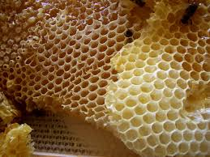

Honeycombs

Honeycombs are made of beeswax made into a hexagonal pattern. Bees use hexagons to minimise the amount of beeswax needed while maximising the space inside to store things such as honey, pollen, and larvae. The more sides a 2D shape has, the more area it will have for the same side length. Circles have infinite sides but they can't be used because they don't tessellate. Making the honeycomb out of one single shape makes it more simple and easy for the bees, out of the three regular polygons that tessellate (triangles, squares, & hexagons), hexagons have the most amount of sides, meaning that they are the most efficient. Honeycombs are what makes up beehives.
Honey
info